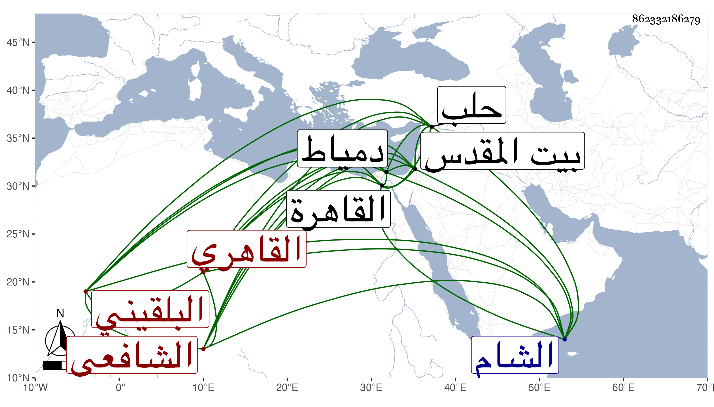

0902Sakhawi.DawLamic.ITO20230111-ara1.EIS1600.862332186279
Biography ID: 862332186279
762
محمد بن عبد الرحمن بن عمر بن رسلان التاج أبو سلمة بن الجلال أبي الفضل بن السراج أبي حفص البلقيني الأصل القاهري الشافعي والد البدر أبي السعادات محمد وإخوته . ولد في نصف ذي القعدة سنة سبع وثمانين وسبعمائة بالقاهرة ونشأ بها فحفظ القرآن والعمدة والمنهاج وألفية النحو وعرض العمدة على جده والزين العراقي وغيرهما وسمع على أبيه وجده والجمال بن الشرائحي وآخرين وأجازت له عائشة ابنة ابن عبد الهادي وخلق وقرأ في الفقه على أبيه وفي النحو على الشمس الشطنوفي أخذ عنه غالب شرح الألفية لابن عقيل ووصفه في البلاغ بهامشه بالشيخ الإمام العلامة وقال إنها قراءة بحث وتحقيق وأملى عليه شرحا له على الأصل انتهى فيه إلى أثناء الإضافة ، وناب عن أبيه في القضاء وتزايد ركونه له لما يعرفه من معرفته وحزمه وسياسته ، ورغب له في ولايته الثانية بعد وفاة جده عن قضاء العسكر واستخلفه حين توجه صحبة المؤيد بمرسوم كتب عليه بالامتثال بقية القضاة بل كان هو القائم بجل أعباء المنصب في غالب ولاياته وحمدت سيرته في ذلك كله خصوصا في خلافته لأبيه بحيث سارت كتب من تخلف عن العسكر من الأعيان بالثناء عليه ، ورغب له أيضا عن تدريس مدرسة الجاي والآثار واشترك مع أخيه بعد موت أبيهما في تدريس التفسير بجامع طولون ونظر وقف السيفي والطقجي واستقل هو بالنظر في وقفي بيلبك الخازنداري وأتابك العزي وغير ذلك ، وحج مرارا وجاور في الرجبية ودخل الشام وحلب مع والده ولم يتيسر له زيارة بيت المقدس وكان يتمناها وكذا كان يتمنى دخول دمياط ، وكان دينا صادق اللهجة حسن المعاملة ذا دربة تامة بمنصب القضاء بحيث كان شيخنا فمن دونه ممن يعتمدونه بل حكمه شيخنا والقاياتي بينهما حتى انقطع التنازع والتمس منه السفطي التوجه للمناوآت ليسجلها وثوقا بحسن تصرفه وجودة رأيه ، ولما مات أبوه عرض عليه قضاء الشافعية وشافهه الأشرف بذلك فأبى بل انقطع من ثم عن التهنئة بالشهر خوفا من إلزامه له به ، وكذا انجمع عن التردد لبني الدنيا جملة ، ولم ينفك عن ملازمة بيته لنزهة ولا غيرها غالبا ولكن كان الغالب عليه الإمساك . أثنى عليه ولده فقال : كان فقيه النفس حسن التصور سريع الإدراك كاشفا عن كثير مما يعرض لي في دروسي أيام الطلب من إشكال ونحوه بأول نظر ، هذا مع كونه المعنى بقول شيخنا :
| مات جلال الدين قالوا ابنه | يخلفه أو فالأخ الكاشح |
| قلت تاج الدين لا لائق | لمنصب الحكم ولا صالح |
وقد سمعت عليه جزءا بإجازته من جده إن لم يكن سماعا ، ولم يزل ملازما لبيته على طريقته حتى مات في ليلة السبت سابع عشري رمضان سنة خمس وخمسين بعد تعلله مدة وتركه مالا جما ودفن من الغد بالزاوية المعروفة بزوجته بالقرب من باب القوس رحمه الله وإيانا . وقد قال فيه ابن تغري بردى إنه كان بخيلا ذا شره زائد في جمع المال إلى الغاية بل كان بخله يتجاوز الحد فإنه كان يبخل حتى على نفسه وعياله ولعل نفقته ما كانت تصل في اليوم لربع دينار مع كثرة عياله وأولاده قال وكان مع بخله حسن المعاملة في الأخذ والعطاء لا طمع له في مال أحد بخلاف أخيه قاسم فإنه كان مسرفا في الكرم وإذا أخذ من أحد قرضا أو نحوه كان آخر العهد به ولا يصل من لعل له تحت نظره استحقاقه إلا بجهد .
